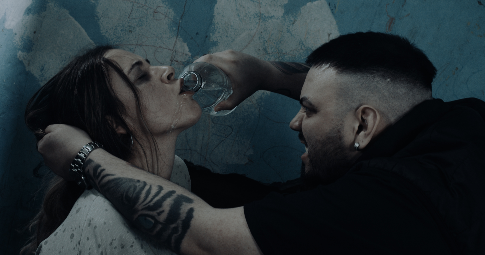
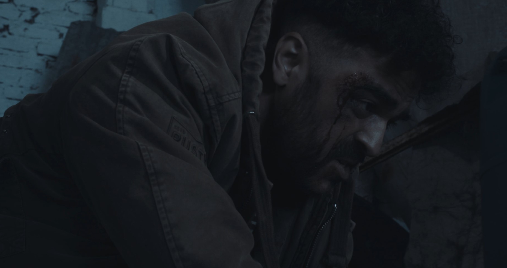
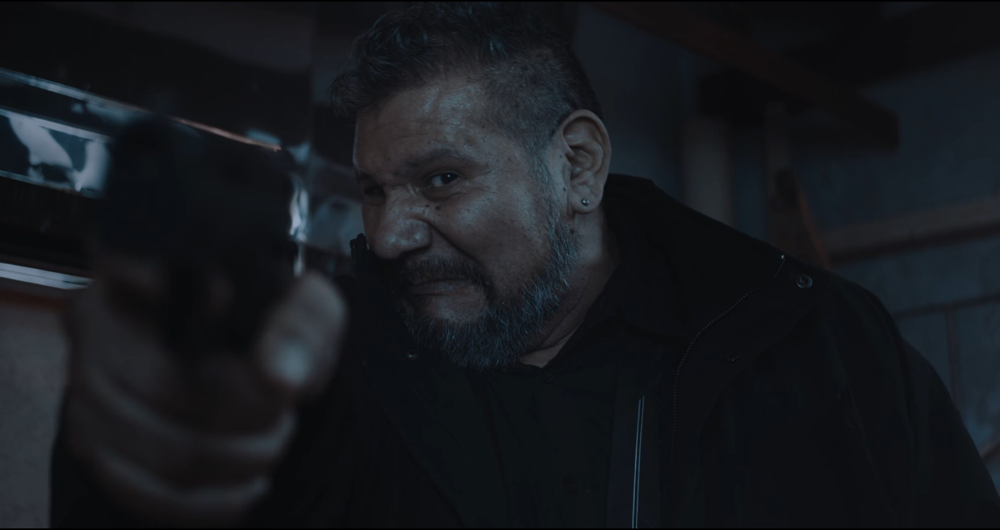
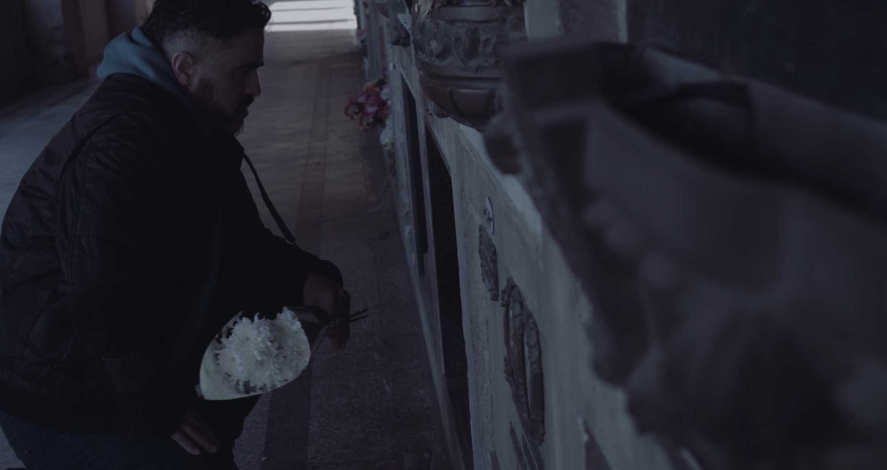
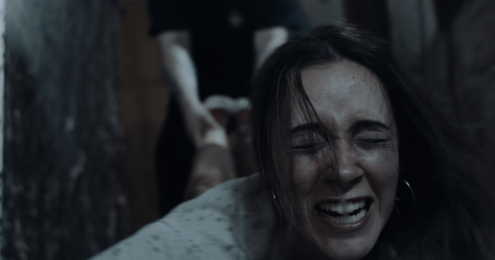
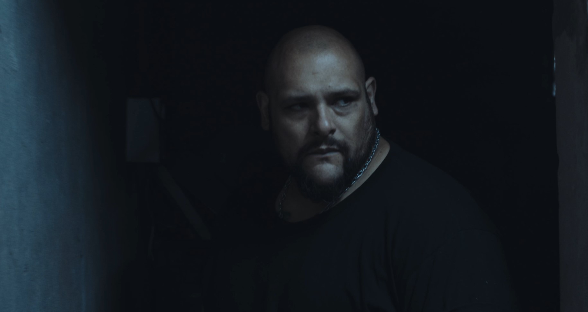
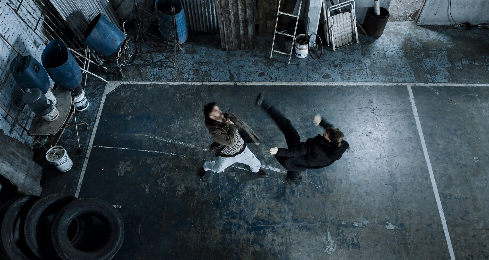
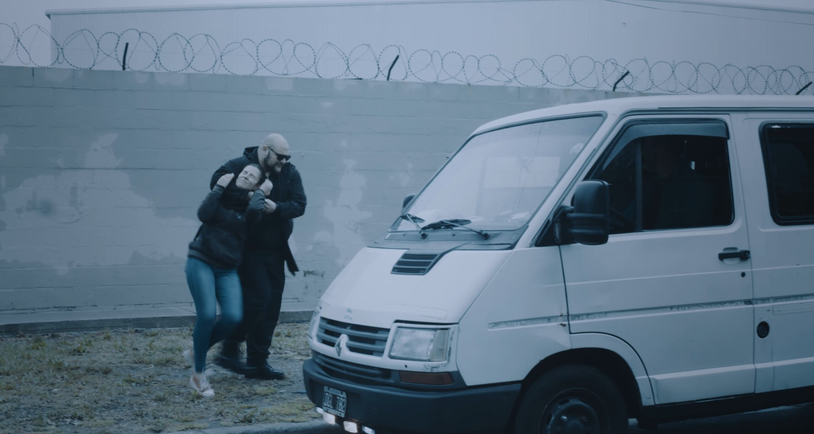
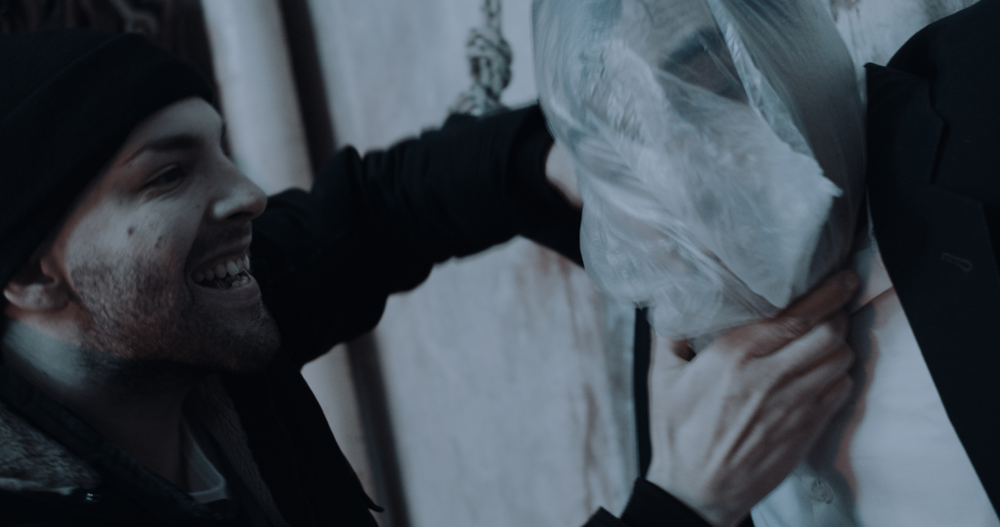
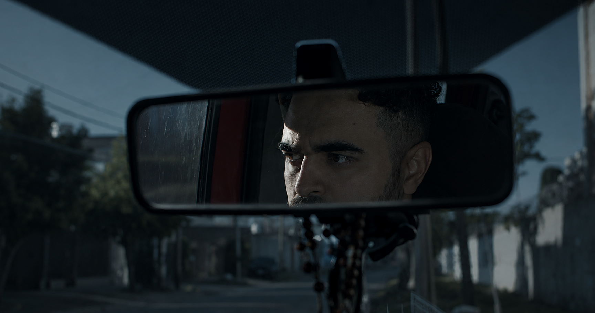

Material en desarrollo. La película se encuentra en etapa de postproducción y aún no cuenta con su versión final. Color, sonido, mezcla y efectos visuales serán completados en la etapa final.
Años después del asesinato de su esposa, Víctor, un expolicía
consumido por la culpa y el deseo de justicia, recibe una nueva pista
sobre el responsable del crimen. Decidido a terminar con la búsqueda
que marcó su vida, se adentra en una peligrosa organización criminal
donde descubre a Camila, una joven secuestrada por la banda. A partir
de ese momento, lo que comenzó como una misión de venganza se
transforma en una desesperada carrera por rescatarla, mientras enfrenta
un entramado de violencia, corrupción y secretos que pondrán a
prueba todo aquello en lo que alguna vez creyó.
Tiempo de Justicia es un largometraje independiente de acción con una fuerte carga dramática,
producido por Victory Cine. La historia transcurre en la ciudad de Rosario, que se convierte en el
escenario principal de una propuesta poco frecuente dentro del cine argentino: un thriller de acción
que combina secuencias de alto impacto con personajes atravesados por el dolor, la pérdida y la
búsqueda de justicia.
Con más del 90% del rodaje realizado, el proyecto avanza hacia su etapa final de producción. El
plan contempla su participación en festivales internacionales, una estrategia de difusión mediante
campañas publicitarias pagas en redes sociales y su estreno en salas de cine. Las producciones
anteriores de Victory Cine han sido seleccionadas en festivales de Estados Unidos, España, Reino
Unido e India, y también han contado con estrenos presenciales dentro del circuito de festivales
en Argentina.
En esta etapa, el proyecto busca establecer alianzas con productores, empresas y marcas que
deseen asociarse a una película con potencial de alcance nacional e internacional. Además de su
participación como patrocinadores, los socios contarán con acciones de comunicación y contenido
especialmente desarrolladas para potenciar la visibilidad de su marca durante el lanzamiento
del proyecto.









